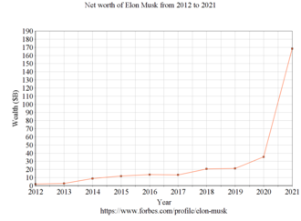

go to elon musk wikipedia
Wealth
Musk made $165 million when PayPal was sold to eBay in 2002. He was first listed on the Forbes Billionaires List in 2012, with a net worth of $2 billion.
At the start of 2020, Musk had a net worth of $27 billion. By the year's end his net worth had increased by $150 billion, largely driven by his ownership of around 20% of Tesla stock. During this, Musk's net worth was often volatile. For example, it dropped $16.3 billion in September, the largest single-day plunge in the history of the Bloomberg Billionaires Index. In November of that year, Musk passed Facebook co-founder Mark Zuckerberg to become the third-richest person in the world; a week later he passed Microsoft co-founder Bill Gates to become the second-richest. In January 2021, Musk, with a net worth of $185 billion, surpassed Amazon founder Jeff Bezos to become the richest person in the world. Bezos reclaimed the top spot the following month. On September 27, 2021, Forbes announced that Musk had a net worth of over $200 billion, and was the richest person in the world, after Tesla stock surged. In November 2021, Musk became the first person with a net worth over $300 billion.
Around three-quarters of Musk's wealth derives from Tesla. Musk does not receive a salary from Tesla; he agreed in 2018 to a compensation plan with the board that ties his personal earnings to Tesla's valuation and revenue. The deal stipulated that Musk only receives the compensation if Tesla reaches certain market values. It was the largest such deal ever done between a CEO and board. In the first award, given in May 2020, he was eligible to purchase 1.69 million TSLA shares (about 1% of the company) at below-market prices, which was worth about $800 million.
Musk has repeatedly described himself as "cash poor", and has "professed to have little interest in the material trappings of wealth". In 2012, Musk signed The Giving Pledge and, in May 2020, Musk pledged to "sell almost all physical poss In 2021, Musk defended his wealth by saying he is "accumulating resources to help make life multiplanetary [and] extend the light of consciousness to the stars". In the early 2000s, Musk was a private pilot, his favorite aircraft then being the L-39 Albatros, though he decided to stop piloting by 2008. He uses a private jet owned by SpaceX and acquired a second jet in August 2020. The jet's heavy use of fossil fuels—it flew over 150,000 miles in 2018—has received criticism. According to ProPublica, Musk paid no federal income taxes in 2018.
About Elon Reeve Musk
Childhood And Family
Education
Business Career
Wealth of Elon Musk